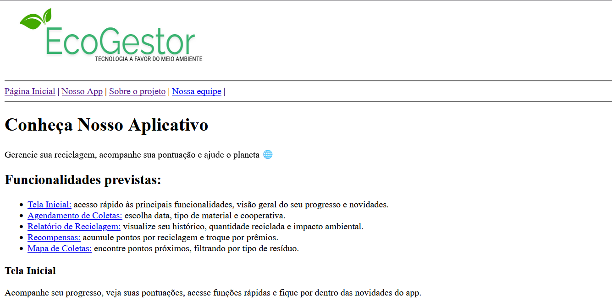
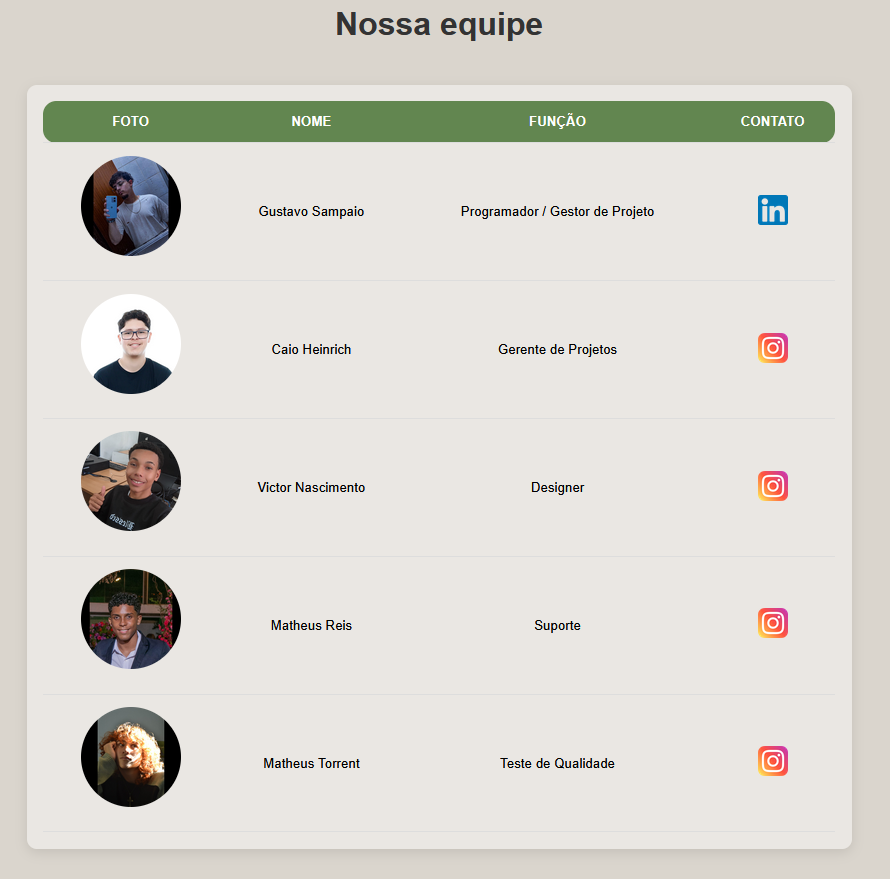
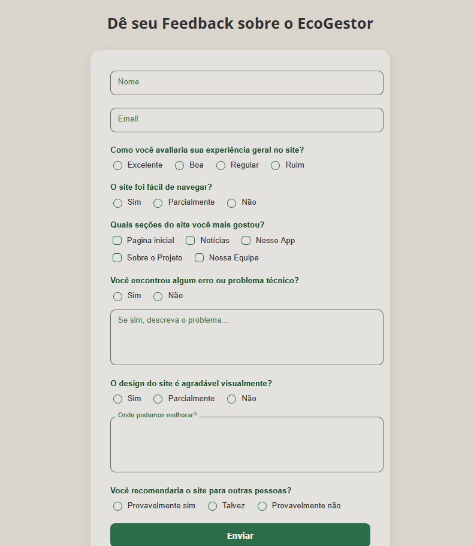

De uma Ideia Sustentável à Ação: A Criação do EcoGestor
O EcoGestor nasceu como um projeto interdisciplinar desenvolvido por alunos do IFMG Campus Ponte Nova, unindo conhecimentos das disciplinas de Projeto de Software, Programação Web, Programação para Dispositivos Móveis e Empreendedorismo.
Inspirados pelos desafios da reciclagem no Brasil, criamos uma solução digital que conecta pessoas à coleta seletiva, com foco em educação ambiental, praticidade e impacto social.
Participe como apoiador, testador do app ou divulgador da ideia na sua comunidade. Nos dê seu feedback e ajude a melhorar o EcoGestor!
Fases de Desenvolvimento
O EcoGestor passou por várias etapas até se tornar o que é hoje. Abaixo, você pode acompanhar como o projeto evoluiu — da estrutura inicial à integração completa entre o site e o aplicativo.

Fase 1 — Estrutura HTML
Nessa etapa, criamos a base do site, organizando os elementos principais em HTML para estruturar o conteúdo e a navegação.

Fase 2 — Estilo com CSS
Aqui o visual começou a ganhar forma! Foram aplicadas cores, fontes e layout responsivo para tornar o site mais agradável.

Fase 3 — Funcionalidades com JS e PHP
Adicionamos scripts JavaScript para interatividade e PHP para conexão com banco de dados, deixando o site mais dinâmico e funcional.